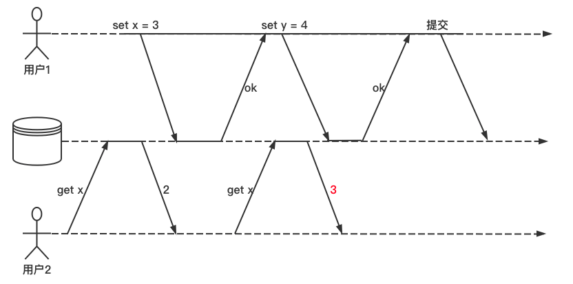
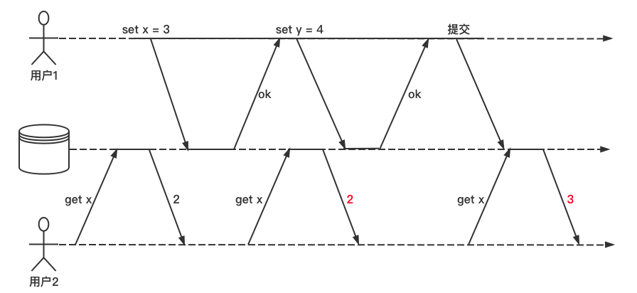
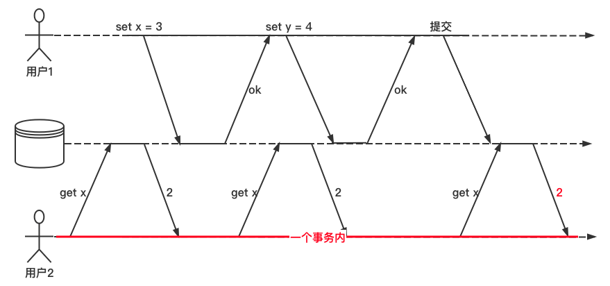
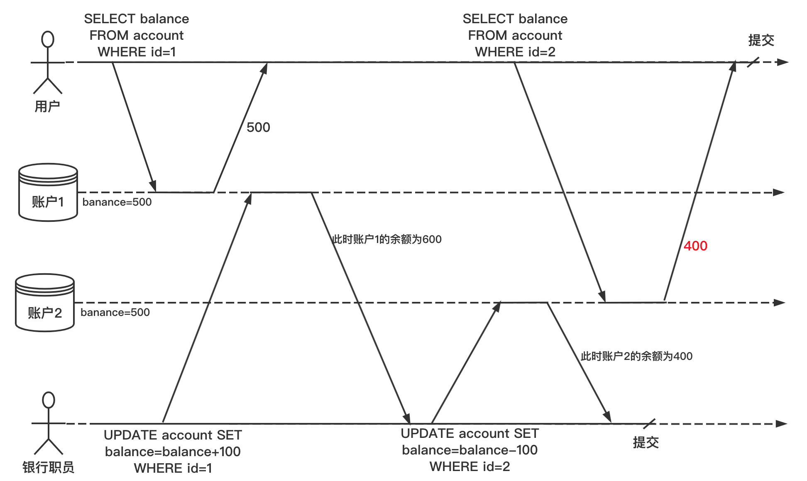
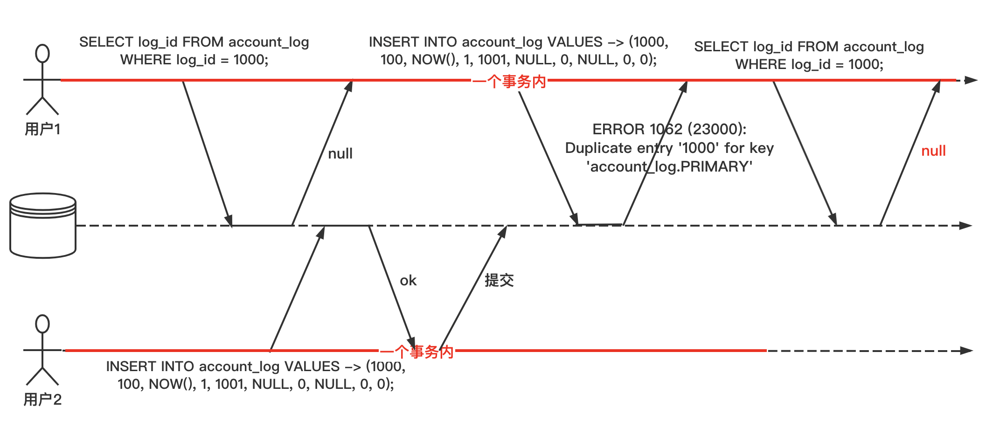

数据库行业有四种常见的隔离级别，分别是 RU、RC、RR、SERIALIZABLE，其中用到最多的是 RR 和 RR。下边分别看一下这四种隔离级别的异同。
RU(READ-UNCOMMITTED) - 能读到未提交的数据
RU 级别，实际上就是完全不隔离。每个进行中事务的中间状态，对其他事务都是可见的，所以有可能会出现「脏读」。
RU 举例

用户1设置 x=3，在用户1的事务未提交之前，用户2 执行 get x 时却看到了 x=3。
RC(READ-COMMITEED) - 能读到已提交的数据
RC 举例

用户1设置 x=3，在用户1的事务未提交之前，用户2 执行 get x 操作依旧返回的时旧值 2。
RR(REPEATABLE-READ) - 可重复读
RC 和 RR 唯一的区别在于“是否可重复读”：在一个事务执行过程中，它能不能读到其他已提交事务对数据的更新，如果能读到数据变化，就是“不可重复读”，否则就是“可重复读”。
RR 举例
继续上边的例子，如果用户2 读取 x 是在同一个事务内，那么永远读到的都是事务开始前x的值。也就是说每个事务都从数据库的一致性快照中读取数据。

在 RR 隔离级别下，在一个事务进行过程中，对于同一条数据，每次读到的结果总是相同的，无论其他会话是否已经更新了这条数据，这就是「可重复读」。
不可重复读导致的问题

假设用户在银行有 1000 块钱，分别存放在两个账户上，每个账户 500。现在有这样一笔转账交易从账户1转 100 到账户2。如果用户在他提交转账请求之后而银行系统执行转账的过程中间，来查看两个账户的余额，他有可能看到帐号1收到转账前的余额（500元），和帐号2完成钱款转出后的余额（500元）。对于用户来说，貌似他的账户总共只有 900 元，有 100 元消失了。
这种异常现象称为不可重复读（nonrepeatable read）或读倾斜（read skew）。
SERIALIZABLE - 串行化
串行化隔离通常被认为是最强的隔离级别。它保证即使事物可能会并行执行，但最终的结果与每次一个即串行执行结果相同。不过由于这种隔离级别性能较差，所以在实际开发中很少被用到，以下是三种实现串行化的技术方案：
- 严格按照串行顺序执行
- 两阶段锁定
- 乐观并发控制技术
隔离级别的要点：
脏读
客户端读到了其他客户端未提交的写入。
脏写
客户端覆盖了另一个客户端尚未提交的写入。
读倾斜（不可重复读）
客户端在不同时间点看到了不同值。
更新丢失
两个客户端同时执行读-修改-写入操作序列，出现了其中一个覆盖了另一个的写入，但又没有包含对方最新值的情况，最终导致了部分修改发生了丢失。
写倾斜
事务首先查询数据，根据返回的结果而作出某些决定，然后修改数据库。当事务提交时，支持决定的前提条件已不再成立。
幻读
事务读取了某些符合查询条件的对象，同时另一个客户端执行写入，改变了先前的查询结果。
幻读这个概念有些抽象，举例说明一下：

- 用户1在一个会话中开启一个事务，准备插入一条 ID 为 1000 的流水记录。查询一下当前流水，不存在 ID 为 1000 的记录，可以安全地插入数据。
- 这时候，另外一个会话抢先插入了这条 ID 为 1000 的流水记录。
- 然后用户1再执行相同的插入语句时，就会报主键冲突错误，但是由于事务的隔离性，它执行查询的时候，却查不到这条 ID 为 1000 的流水，就像出现了“幻觉”一样，这就是幻读。
在实际业务中，很少能遇到幻读，即使遇到，也基本不会影响到数据准确性。
最后用一张表格总结一下上边的内容：